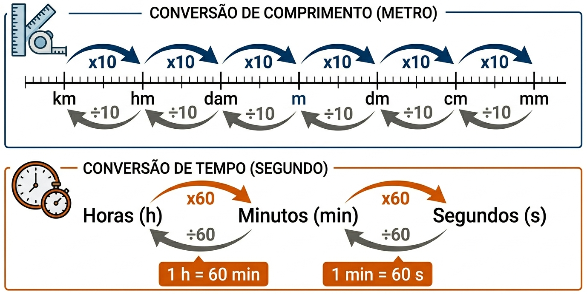

1º Ano | Aula 01: Grandezas e Unidades Fundamentais
📚 Resumo
Uma grandeza física é tudo aquilo que pode ser medido e quantificado. Para que essas medidas sejam compreendidas mundialmente, utiliza-se o Sistema Internacional de Unidades (SI).
O SI padroniza unidades fundamentais como o metro (m), o quilograma (kg) e o segundo (s), garantindo a precisão em experimentos científicos, no comércio e na tecnologia.
📖 Grandezas e Unidades Fundamentais
1. Grandezas Escalares e Vetoriais
As grandezas físicas são divididas em dois grupos principais de acordo com a necessidade de informação para sua compreensão:
Grandezas Escalares: Ficam perfeitamente definidas apenas por um valor numérico e uma unidade de medida. Exemplos: massa (50 kg), tempo (10 s), temperatura (25°C) e energia.
Grandezas Vetoriais: Além do valor e da unidade, precisam de direção e sentido para serem compreendidas. Exemplos: força, velocidade, aceleração e deslocamento.
2. O Sistema Internacional (SI)
As três grandezas fundamentais da mecânica no SI e suas respectivas unidades são:
Comprimento: metro (m)
Massa: quilograma (kg)
Tempo: segundo (s)

Figura 1: Esquema de conversão para unidades de base no Sistema Internacional.
3. Prefixos do SI (Potências de 10)
Prefixos facilitam a escrita de valores muito grandes ou pequenos. Os mais utilizados são:
Prefixo
Símbolo
Fator multiplicador
Mega
M
$10^6$ (1.000.000)
Quilo
k
$10^3$ (1.000)
Centi
c
$10^{-2}$ (0,01)
Mili
m
$10^{-3}$ (0,001)
Micro
$\mu$
$10^{-6}$ (0,000001)
💡 Física em Ação
🛰️ Tecnologia
O GPS depende da sincronização de tempo em nanossegundos entre satélites e receptores para calcular posições com metros de erro.
⚖️ Comércio
A definição exata do Quilograma garante que produtos comprados em diferentes países tenham a mesma massa real, facilitando a economia global.
✅ 5 Questões Resolvidas (R 1 a 5)
R 1: Classificação de Grandezas
Enunciado: Classifique como escalar ou vetorial: Massa, Força, Temperatura e Deslocamento.
Resolução:
- Massa: Escalar (apenas valor basta).
- Força: Vetorial (precisa de direção e sentido).
- Temperatura: Escalar (apenas valor basta).
- Deslocamento: Vetorial (precisa indicar para onde foi o movimento).
R 2: Conversão de Tempo
Enunciado: Quantos segundos existem em 2 horas e 30 minutos?
Enunciado: Um atleta correu 5,2 km. Quantos metros ele percorreu?
Resolução: Como o prefixo 'k' (quilo) equivale a $10^3$ (1000), temos:
$5,2 \times 1000 = \mathbf{5200\text{ m}}$.
R 4: Conversão de Massa
Enunciado: Converta 850 gramas para quilogramas (unidade SI).
Resolução: No SI, a unidade de massa é o kg. Como 1 kg = 1000 g, dividimos por 1000:
$850 / 1000 = \mathbf{0,85\text{ kg}}$.
R 5: Área no SI
Enunciado: Uma placa possui área de $200\text{ cm}^2$. Qual esse valor em $\text{m}^2$?
Resolução: Para áreas, o fator de conversão é ao quadrado. $1\text{ m} = 100\text{ cm} \implies 1\text{ m}^2 = (100)^2 = 10.000\text{ cm}^2$.
$200 / 10000 = \mathbf{0,02\text{ m}^2}$.
✍️ 5 Questões Propostas (P 6 a 10)
P 6: Unidades Fundamentais
Enunciado: No SI, quais são as unidades de comprimento, massa e tempo, respectivamente?
Resolução: Metro (m), quilograma (kg) e segundo (s).
P 7: Prefixo Mili
Enunciado: Um comprimido tem 500 mg. Qual a sua massa em gramas?
Resolução: O prefixo 'm' (mili) significa dividir por 1000: $500 / 1000 = 0,5\text{ g}$.
P 8: Velocidade Composta
Enunciado: Converta $72\text{ km/h}$ para $\text{m/s}$ (unidade SI).
Resolução: Para passar de km/h para m/s, dividimos por 3,6: $72 / 3,6 = 20\text{ m/s}$.
P 9: Micro e Potência
Enunciado: Escreva $40 \mu\text{m}$ (micrômetros) em metros utilizando potência de 10.
Resolução: O prefixo micro ($\mu$) equivale a $10^{-6}$. Logo: $40 \times 10^{-6}\text{ m}$ ou $4 \times 10^{-5}\text{ m}$.
P 10: Volume no SI
Enunciado: Uma caixa d'água tem 1000 litros. Sabendo que $1\text{ m}^3 = 1000\text{ L}$, qual o volume da caixa no SI?
Resolução: No SI, a unidade de volume é o metro cúbico ($\text{m}^3$). Portanto, o volume é $1\text{ m}^3$.
🎓 TESTES (T 11 a 15)
T 11: (UFPR) Unidades de Medida
O uso de múltiplos e submúltiplos de unidades de medida simplifica a escrita de números extensos. Considere que o diâmetro de um fio de cabelo vale e = 0,000070 m. Qual alternativa expressa este valor corretamente?
A) e = 0,70 cm
B) e = 0,70 km
C) e = 70 mm
D) e = 70 μm
E) e = 70 nm
Resolução: Alternativa D. 0,000070 m = $70 \times 10^{-6}\text{ m}$. Como $10^{-6}$ é o prefixo micro ($\mu$), o valor é 70 μm.
T 12: (IFSC) Conversão de Unidades
A Federação Internacional de Atletismo – IAAF divulgou, no início do ano de 2019, os índices olímpicos para as Olimpíadas de Tokyo em 2020. O índice olímpico para a prova da Maratona Feminina, por exemplo, é de 2h29min30s. Assinale a alternativa que mais se aproxima deste índice olímpico, expresso apenas na unidade de tempo horas:
A) 2,5001h
B) 2,4899h
C) 2,4916h
D) 2,2930h
E) 2,5102h
Resolução: Alternativa C.
Primeiro, mantemos as 2 horas inteiras.
Depois, convertemos os 30 segundos para minutos: 30 / 60 = 0,5 minuto.
Somamos aos minutos existentes: 29 + 0,5 = 29,5 minutos.
Por fim, convertemos os minutos para horas: 29,5 / 60 = 0,49166... h.
Somando tudo: 2h + 0,4916h = 2,4916h.
T 13:(CESMAC) Cálculo de Medicamentos
Naproxeno é uma medicação indicada para doenças reumáticas. Um médico receitou 1375 mg de Naproxeno por dia, em doses iguais. Cada tablete do Naproxeno disponível contém 0,275 g do medicamento. A quantos tabletes diários corresponde a prescrição do médico?
A) 4
B) 5
C) 6
D) 8
E) 10
Resolução: Alternativa B.
Primeiro, padronizamos as unidades. Convertendo a massa do tablete de gramas para miligramas: 0,275 g = 275 mg (multiplicamos por 1.000).
Agora, dividimos a dose total prescrita pela massa de cada tablete: 1375 / 275 = 5 tabletes.
T 14: (FGV-SP) Grandezas Escalares
São grandezas exclusivamente escalares:
A) tempo, deslocamento e força
B) força, velocidade e aceleração
C) tempo, temperatura e volume
D) temperatura, velocidade e volume
E) tempo, temperatura e deslocamento
Resolução: Alternativa C. Tempo, temperatura e volume não possuem direção ou sentido. Deslocamento, força, velocidade e aceleração são vetoriais.
T 15: (Cefet-PR) Grandezas Escalares e Vetoriais
Verifique quais são as grandezas escalares e vetoriais nas afirmações abaixo:
1) O deslocamento de um avião foi de 100 km, para o Norte.
2) A área da residência é de 120,00 m².
3) A força necessária para erguer uma caixa é de 100 N.
4) A velocidade de um automóvel é de 80 km/h, rumo à capital.
5) Um jogo de futebol dura 90 minutos.
A) vetorial, vetorial, escalar, vetorial, escalar.
B) vetorial, escalar, escalar, vetorial, escalar.
C) escalar, escalar, vetorial, vetorial, escalar.
D) vetorial, escalar, vetorial, vetorial, escalar.
E) escalar, escalar, vetorial, escalar, escalar.
Resolução: Alternativa D. Deslocamento (1), Força (3) e Velocidade (4) são vetoriais. Área (2) e Tempo (5) são escalares.